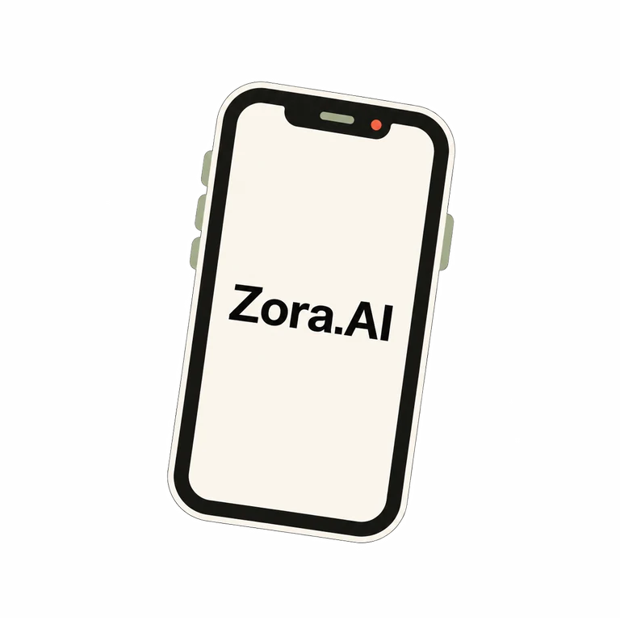
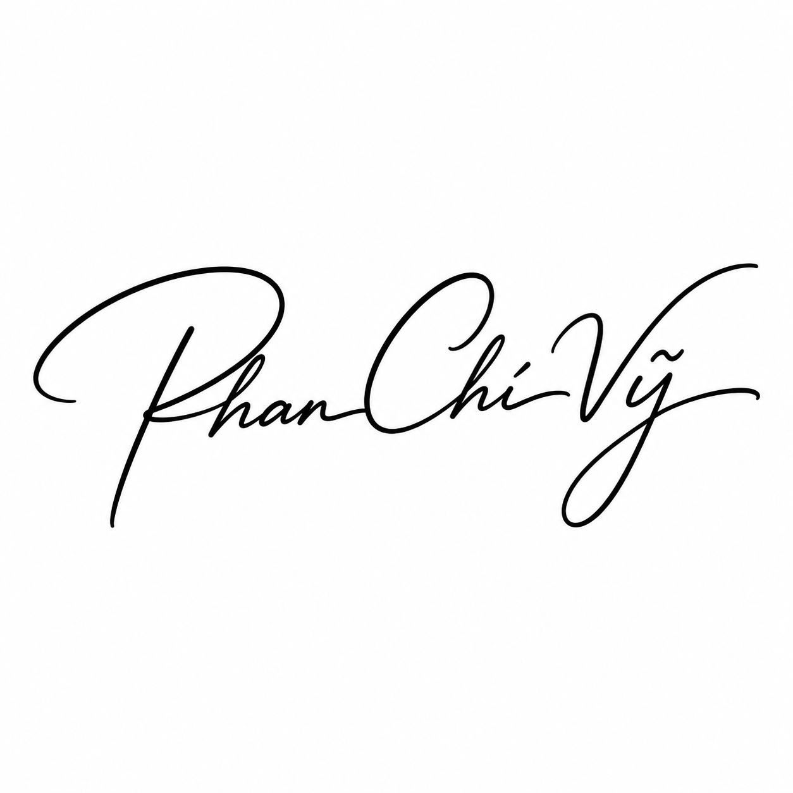

Four projects. Different moods. Same refusal to sit still.
TRANSMISSION 01Finished

Android / Kotlin / Native AI Companion
Zora.AI
A native Android AI companion with zero restrictions on persona customization, Gemini Live voice duplex, holographic gyro parallax, and encrypted local storage.
Offline manga localization MCP server with RT-DETR detection, LaMa deep inpainting, local Baberu OCR, smart comic typesetting, and a native egui QA editor.
Yahallo! Who is Phan Chi Vy? I'm Phan Chí Vỹ (Yozora / Kyokkei), an IC Design student at IUH in Saigon and an independent software developer. I study circuits and FPGA/VLSI, explore AI red-teaming, build native systems, and open-source my tools.
A word to keep
“To live is to risk it all otherwise you're just an inert chunk of randomly assembled molecules drifting wherever the universe blows you.”— Rick Sanchez

In the abyss of night, a single star remains Burning through the dark, defiant Swine and sovereign, one and the same
Current coordinates
Grounded in Saigon.
Location
Saigon, Vietnam (10.82°N, 106.63°E)
Education & Major
IUH (ĐH Công nghiệp TP.HCM) · IC Design (VLSI & FPGA)
Core craft
Frontier LLM Jailbreak · RLHF Bypass · SDXL Neural Director · IC Design
Current loadout
Things I mess with.
No percentage bars. Just tools, systems, and rabbit holes I know well enough to make something interesting with.